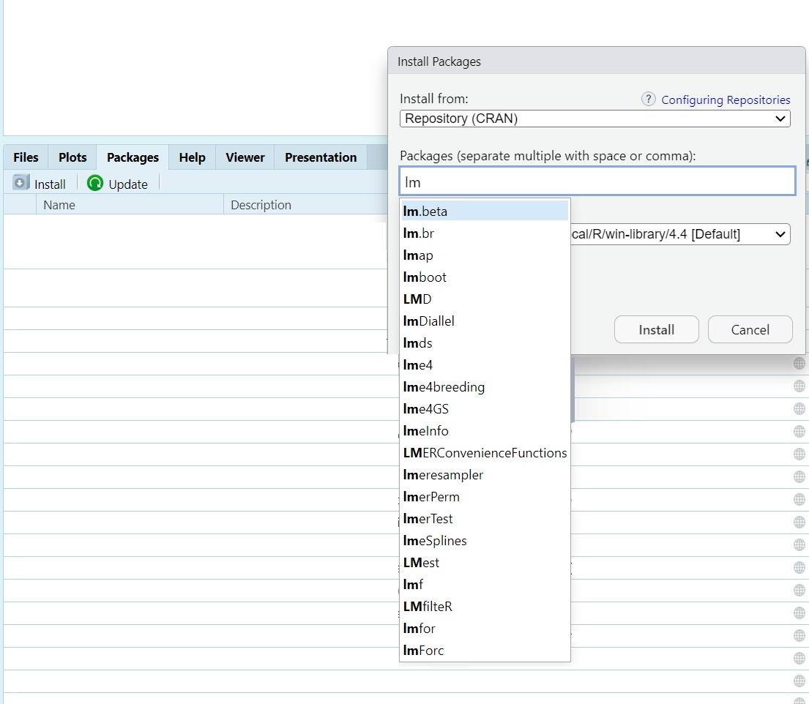
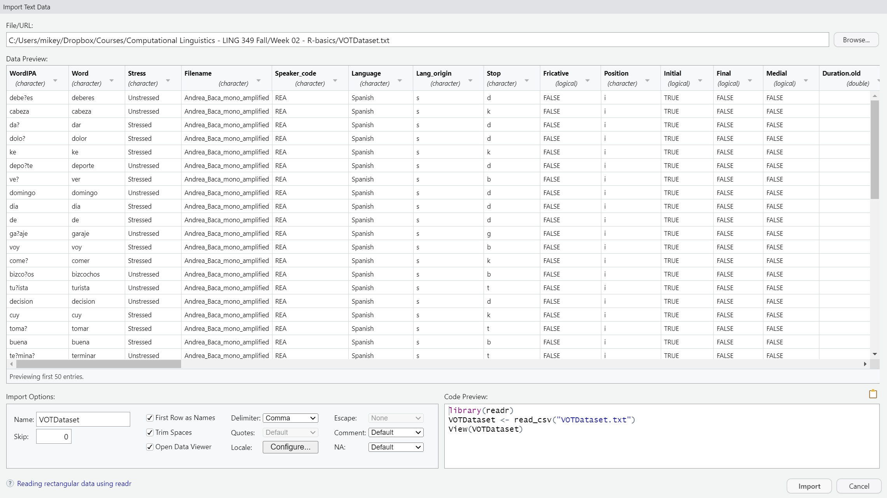
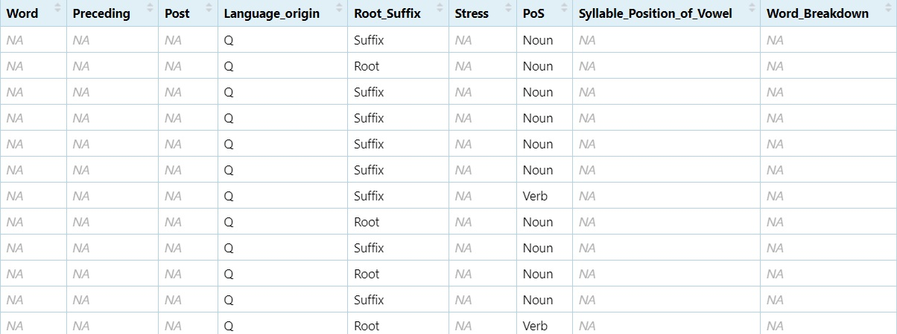
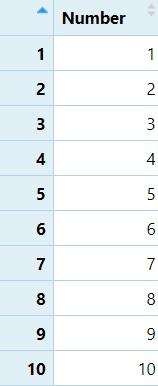
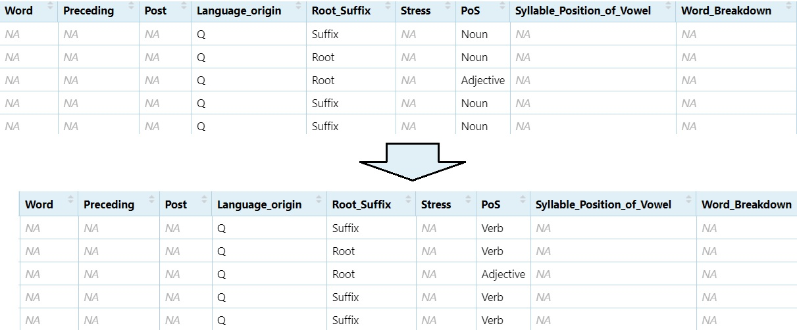
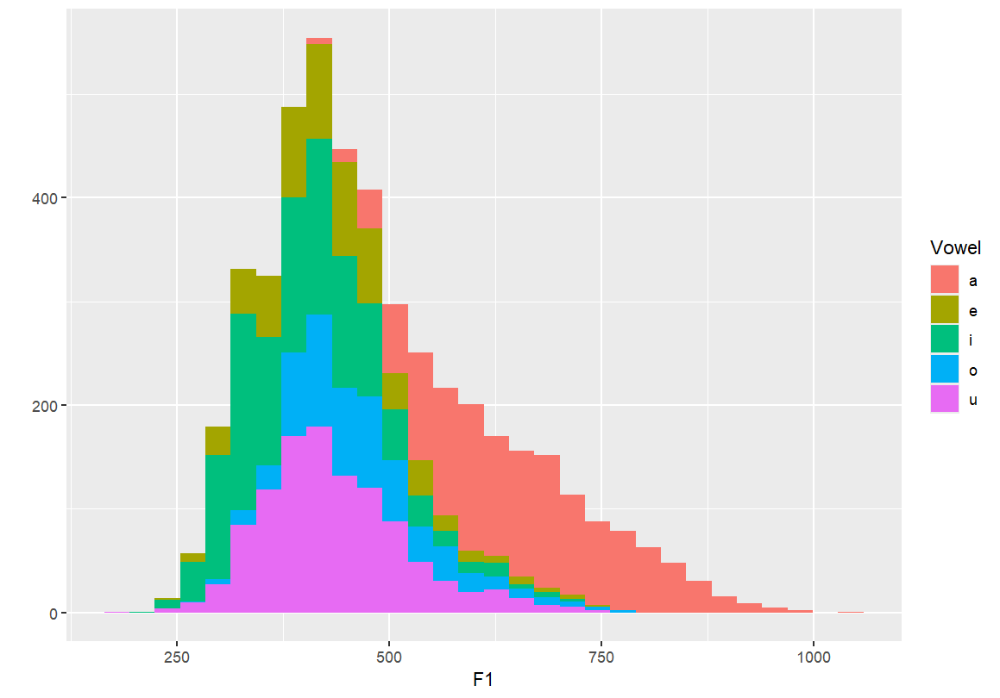

R-basics
Dr. Jesse Stewart
2025-08-05
1 Introduction to R Basics
This document introduces basic R functionality and demonstrates how to work with linguistic annotation files using R. Specifically, we will focus on:
- 1 Introduction to R Basics
- 2 What is a Library in R?
- 3 Loading data
- 4 Writing Data to Your Computer
- 5 Basic Data Manipulation
- 6 Plotting
These skills are fundamental for students working with linguistic corpora, especially for processing output from annotation tools such as ELAN and Praat.
The main task of this module is to manipulate structured information from various datasets, clean and reformat the data, and generate readable output with speaker and tier information preserved.
2 What is a Library in R?
In R, a library is a collection of pre-written functions, datasets, and documentation that extends the functionality of R.
More precisely: A library refers to a
package that has been loaded into your current R session using
the library() function.

For example, the following code loads the dplyr
package:
library(stringr)
library(dplyr)
library(readxl)
library(tidyr)
library(ggplot2)
library(tidyverse)
library(writexl)
library(ggrepel)
library(lme4)
library(lmerTest)3 Loading data
3.1 Importing Data in RStudio
When working with RStudio, you can import datasets using the Import Dataset button in the Environment pane. Below are the instructions for the first three options shown in the image.
3.2 From Text (base)
This option uses base R functions such as read.csv() to
import plain text or CSV files.
Steps: - Click
Import Dataset > From Text (base)... - Choose a
.txt or .csv file from your hard drive - In
the dialog: - Choose the correct separator (e.g., Comma or Tab) - Select
Header = TRUE if your file contains column names - Click
Import
Generated Code Example:
mydata <- read.csv("path/to/your/file.csv", header = TRUE)3.3 From Text (readr)
This option uses the readr package (part of the
tidyverse) for importing delimited text files. It is more efficient and
consistent than base R functions.
- You select a
.csvor.txtfile from your system. - The import wizard appears with similar options:
- You can choose how the file is encoded (UTF-8, Latin1, etc.)
- You can specify column types or let R infer them automatically.
- When the import is complete, RStudio will display a data preview and
show the
read_csv()orread_tsv()command it generated usingreadr.
3.4 From Excel
This option uses the readxl package to import Microsoft
Excel files.
- After choosing this option, a dialog prompts you to select an
.xlsxfile. - You can then choose which sheet from the Excel workbook to import.
- You may be asked if the first row should be treated as column names.
- Once confirmed, RStudio previews the data and generates the
appropriate
read_excel()command from thereadxlpackage.
These import tools help you quickly bring external data into your R session without needing to write code manually, though RStudio still shows you the code it used which you can copy, modify, and reuse in your scripts.
3.5 Manually:
read_csv
VOTData <- read_csv("C:/Users/Courses/Computational Linguistics - LING 349 Fall/R-basics/VOTDataset.txt")
View(VOTData)
readLines
lines <- readLines("C:\\Users\\Courses\\Computational Linguistics - LING 349 Fall\\02 - NLP\\TextGrids\\combined_output_cleaned.txt", encoding = "UTF-8")
lines=as.data.frame(lines)
View(lines)read_excel
Data <- read_excel("C:/Users/Computational Linguistics - LING 349 Fall/Dataset/Dataset - Ss version.xlsx")3.6 Mac users: You can manually load a dataset using a relative path.
If your file is on the Desktop, try:
mydata <- read_csv("~/Desktop/myfile.csv")The ~ refers to your home directory. Avoid using Windows-style paths like C:/Users/…
4 Writing Data to Your Computer
Once you’ve finished processing or cleaning your data in R, you can
write it back to your computer using functions like
write.csv() or write_xlsx(). These functions
allow you to save your dataframe in formats that can be opened in
spreadsheet software like Excel.
Here are a few examples:
4.1 Using
write.csv() to save a file as plain text
write.csv(VOTData, "C:/Users/Courses/Computational Linguistics - LING 349 Fall/R-basics/NEWdataset.txt")This writes the contents of the VOTData dataframe to a text file in CSV format. The path must be adjusted to match the location on your own system.
4.2 Using write_xlsx() to save an Excel file
write_xlsx(clean_df, "C:\\Users\\mikey\\Dropbox\\Courses\\Computational Linguistics - LING 349 Fall\\02 - NLP\\TextGrids\\clean_df.xlsx")This writes the clean_df dataframe to an .xlsx Excel file using the writexl package. Be sure to double backslash (\) your paths on Windows.
4.3 For Mac users:
If you’re using a Mac, you can specify your Desktop or other folders using a tilde ~ to refer to your home directory.
write.csv(dataset, "~/Desktop/NEWdataset.txt")5 Basic Data Manipulation
Data manipulation in R is essential for preparing your dataset for analysis. This includes tasks like backing up your data, renaming columns, or making manual edits (though the latter is discouraged).
5.1 Creating a Backup of Your Dataset
You may want to store your original data in a new object so you can return to it later if needed. This is sometimes called copying a dataset or creating a new object (or vector, list, dataframedepending on the data structure).
dataset <- Data5.2 Changing Column Names
Renaming columns can make your dataset easier to work with,
especially if the default names are unclear or contain special
characters. Consistent naming helps during analysis and plotting.
Watch on
YouTube
colnames(dataset)[1] <- "Hablante"
colnames(dataset)[2] <- "Vocal"
colnames(dataset)[3] <- "Sexo"
colnames(dataset)[4] <- "Educación"To confirm the changes, run:
colnames(dataset)5.3 Manually Editing Your Data (Not Recommended)
While R allows you to manually edit your data using spreadsheet-style
windows, this approach is not reproducible. Manual edits do not get
recorded in your script, and it becomes difficult to track or reverse
changes later.
Watch on
YouTube
x <- edit(dataset)
fix(dataset)Tip: Always prefer scripted data cleaning so your workflow is transparent, reproducible, and easier to debug.
5.4 Looking at Structure
Understanding the structure and distribution of your dataset is an
essential part of any data analysis workflow. The following functions
help you summarise your data, inspect variable types, and check levels
of categorical variables.
Watch on
YouTube
summary(dataset)Provides summary statistics (mean, min, max, etc.) for each column.
str(dataset)Displays the internal structure: variable types, lengths, and a data preview.
You can also inspect how values are distributed in specific columns:
table(dataset$PoS)Shows the frequency of each part of speech tag.
levels(as.factor(dataset$PoS))Lists the unique levels for a categorical variable.
Note that the following two commands produce the same output:
table(dataset$Language_origin)
summary(as.factor(dataset$Language_origin))You can convert data types using functions such as
as.factor(), as.numeric(),
as.character(), etc. This is often useful when preparing
data for statistical modelling, where numeric values may be required, or
when treating character data as categorical factors. Watch on
YouTube
as.numeric(as.factor(dataset$Language_origin))(This will result in an error as Language_orgin is not numeric)
5.5 Subsetting
Subsetting is a crucial skill in R that allows you to focus your
analysis on specific parts of your dataset. Whether you’re filtering by
category, excluding values, or pulling certain columns, knowing how to
subset accurately is essential for working efficiently with linguistic
data.
Watch on
YouTube
5.5.1 Subsetting by a single condition
Use subset() to extract rows that meet a condition. For
example, to keep only the nouns:
nouns <- subset(dataset, PoS == "Noun")
View(nouns)You can apply the same logic to any variable.
5.5.2 Subsetting by negation
Negation is important when you want to exclude a certain category:
non_nouns <- subset(dataset, PoS != "Noun")
View(non_nouns)5.5.3 Subsetting by two or more levels
You can use the logical OR operator (|) to include multiple levels:
NV <- subset(dataset, PoS == "Noun" | PoS == "Verb")
View(NV)
To exclude both:
NNNV <- subset(dataset, PoS != "Noun" & PoS != "Verb")
View(NNNV)
Note: The difference between | and & is that |
keeps a row if either condition is true, while & only keeps rows
where both conditions are true.
5.5.4 Subsetting by column names
You can also subset just specific columns by their names:
SF1F2 <- subset(dataset, select = c("Speaker", "F1", "F2"))
View(SF1F2)5.5.5 Subsetting by column numbers
Column numbers can be used when names are unknown or inconsistent:
SF1F2_2 <- subset(dataset, select = c(1, 9, 10))
View(SF1F2_2)5.5.6 Subsetting with regular expressions
You can subset using grepl() to match text patterns:
Adj <- subset(dataset, grepl("([Aa][Dd][Jj]|[Aa]djective)", dataset$PoS))
View(Adj)To exclude a pattern:
non_adj <- subset(dataset, !grepl("([Aa][Dd][Jj]|[Aa]djective)", dataset$PoS))
View(non_adj)
Subsetting allows you to zoom in on the relevant data for your analysis, whether that means isolating a part of speech, removing irrelevant rows, or focusing on key variables.
5.6 Creating and Combining Data Frames
Often you’ll need to build your own datasets or merge existing ones.
This section shows how to create simple vectors, convert them into data
frames, and combine them using cbind() (column bind) or
rbind() (row bind).
Watch on
YouTube
5.6.1 Creating Lists of Data
You can start by creating a numeric vector of values from 1 to 10:
Number <- c(1, 2, 3, 4, 5, 6, 7, 8, 9, 10)
Number <- as.data.frame(Number)
View(Number)
Now let’s make a list of 10 animals:
Animal <- c("cat", "dog", "moose", "rat", "marmot", "rabbit", "hamster", "chinchilla", "beaver", "guinea pig")
Animal <- as.data.frame(Animal)
View(Animal)And finally, a vector for their sizes:
Size <- c("M", "M", "L", "S", "S", "S", "S", "S", "M", "S")
Size <- as.data.frame(Size)
View(Size)5.6.2 Combining Columns with cbind()
We can now combine the Number, Animal, and
Size data frames into a single table:
NAS <- cbind(Number, Animal, Size)
View(NAS)SF1F2_2 <- subset(dataset, select = c(1, 9, 10))5.6.3 Combining Row Subsets with rbind()
Nouns <- subset(dataset, PoS == "Noun")
Verbs <- subset(dataset, PoS == "Verb")
NV <- rbind(Nouns, Verbs)
View(NV)5.7 Rename, Remove, Replace Data
These operations are essential for cleaning and reshaping your
dataset.
Watch on
YouTube
Back up your data
DS <- dataset5.7.1 Remove Rows and Columns
Remove first row:
DS1 = DS[-1,]
View(DS1)Remove rows 1 through 10
DS1 = DS[-1:-10,]
View(DS1)Remove the 2nd column (e.g., “Vowel”)
DS1 = DS[, -2]
View(DS1)Remove columns 2 through 5 (e.g., “Vowel” to “SES”)
DS1 = DS[, -2:-5]
View(DS1)5.7.2 Subset Column(s)
View only column 1
DS1 = DS[, 1]
View(as.data.frame(DS1))
View columns 1 through 10
DS1 = DS[, 1:10]
View(DS1)5.7.3 Replace Data in Cells
Change all instances of ‘Noun’ to ‘Verb’
DS$PoS[DS$PoS == "Noun"] = "Verb"
View(DS)
Change ‘Noun’ and ‘Adjective’ to ‘Verb’
DS$PoS[DS$PoS == "Noun" | DS$PoS == "Adjective"] = "Verb"
View(DS)5.8 Formatting Your Data
These operations help extract and standardise key parts of your text data. Watch on YouTube
library(stringr)Create the Vowel column.
#One character after the `@` sign from the phrase column.
dataset$Vowel = str_extract(dataset$Phrase, "@.")
View(dataset)
#Then replace the `@` sign with nothing (basically deleting it).
dataset$Vowel = gsub("@", "", dataset$Vowel)
View(dataset)Create the Phrase column Change underscore to space.
#Replace "_" with " "
dataset$Phrase = gsub("[_]", " ", dataset$Phrase)
View(dataset)Extract words containing the @ sign
#From the `Phrase` column, extract a word character(s) until the `@` sign and then the rest of the word character(s).
dataset$Word = str_extract(dataset$Phrase, "\\w*@\\w*")
View(dataset)Add % to the beginning and end of the word
#Replace a word boundary at the beginning of a line with `%`
dataset$Word = gsub("^\\b", "%", dataset$Word)
#Replace the end of the line (word in this case) with %
dataset$Word = gsub("$", "%", dataset$Word)
View(dataset)Extract preceding sound Adds one character before the @
and two after
#grab the character before the `@` sign, then two characters after the `@` sign.
dataset$Preceding = str_extract(dataset$Word, ".@..")
#Grab whatever is in the first position.
dataset$Preceding = str_extract(dataset$Preceding, "^.{1}")Extract following sound Adds one character before the @
and two after
#grab the character before the `@` sign, then two characters after the `@` sign.
dataset$Post = str_extract(dataset$Word, ".@..")
#Grab the character just before the end position.
dataset$Post = str_extract(dataset$Post, ".{1}$")5.9 IF Statements
You can use ifelse() statements to categorise data and
prepare it for analysis.
Watch on
YouTube
5.9.1 Nested IF Statements (Vowel Height Classification)
#If the vowel is `a` mark it as `Low`, if it's `e` or `o`, mark it as `Mid`, if it's `i` or `u`, mark it as `high`, if it's anything else mark it as `Error`.
dataset$VowelType = ifelse(dataset$Vowel == "a", "Low",
ifelse(dataset$Vowel %in% c("e", "o"), "Mid",
ifelse(dataset$Vowel %in% c("i", "u"), "High", "Error")))5.9.2 Class of Sound in Pre-Vowel Position
#If there is a vowel in the preceding column, then we're dealing with two vowels in a row (a vowel sequence or diphthong), if the segments are `mnɲŋ`, mark as nasal etc.
dataset$PrecedingClass = ifelse(grepl("[iueoa]", dataset$Preceding), "Diphthong",
ifelse(grepl("[mnɲŋ]", dataset$Preceding), "Nasal",
ifelse(grepl("[ptkbdg]", dataset$Preceding), "Stop",
ifelse(grepl("[ɸfszʃʒʐxhʧ]", dataset$Preceding), "Fricative",
ifelse(grepl("[pjɾlw]", dataset$Preceding), "Sonorant",
ifelse(grepl("%", dataset$Preceding), "Initial", "NA"))))))5.9.3 Class of Sound in Post-Vowel Position
#If there is a vowel in the post column, then we're dealing with two vowels in a row (a vowel sequence or diphthong), if the segments are `mnɲŋ`, mark as nasal etc.
dataset$PostClass = ifelse(grepl("[iueoa]", dataset$Post), "Diphthong",
ifelse(grepl("[mnɲŋ]", dataset$Post), "Nasal",
ifelse(grepl("[ptkbdg]", dataset$Post), "Stop",
ifelse(grepl("[ɸfszʃʒʐxhʧ]", dataset$Post), "Fricative",
ifelse(grepl("[pjɾlw]", dataset$Post), "Sonorant",
ifelse(grepl("%", dataset$Post), "Initial", "NA"))))))5.9.4 Voicing Classification
#Preceding sound voicing
#If it's any of the voiceless segments (ptkɸfsʃxhʧ), mark as `Voiceless`, if it's any of the voiced segments (mnɲŋbdgzʒʐjlɾwaeiou), mark as `Voiced`; if the vowel in question is at the beginning, mark as `initial`
dataset$VoicingPRE = ifelse(grepl("[ptkɸfsʃxhʧ]", dataset$Preceding), "Voiceless",
ifelse(grepl("[mnɲŋbdgzʒʐjlɾwaeiou]", dataset$Preceding), "Voiced",
ifelse(grepl("[%]", dataset$Preceding), "Initial", "NA")))
#Following sound voicing
dataset$VoicingPOST = ifelse(grepl("[ptkɸfsʃxhʧ]", dataset$Post), "Voiceless",
ifelse(grepl("[mnɲŋbdgzʒʐjlɾwaeiou]", dataset$Post), "Voiced",
ifelse(grepl("[%]", dataset$Post), "Final", "NA")))5.9.5 Binary Variable Creation
These are helpful when running statistical models, particularly mixed
effects models.
Watch on
YouTube
#If the preceding column contains `Diphthong`, mark it as TRUE, if not, mark it as FALSE
dataset$Pre_Diphthong = ifelse(dataset$PrecedingClass == "Diphthong", TRUE, FALSE)
#If the post column contains `Diphthong`, mark it as TRUE, if not, mark it as FALSE
dataset$Post_Diphthong = ifelse(dataset$PostClass == "Diphthong", TRUE, FALSE)
dataset$Pre_Nasal = ifelse(dataset$PrecedingClass == "Nasal", TRUE, FALSE)
dataset$Post_Nasal = ifelse(dataset$PostClass == "Nasal", TRUE, FALSE)
dataset$Pre_Stop = ifelse(dataset$PrecedingClass == "Stop", TRUE, FALSE)
dataset$Post_Stop = ifelse(dataset$PostClass == "Stop", TRUE, FALSE)
dataset$Pre_Fricative = ifelse(dataset$PrecedingClass == "Fricative", TRUE, FALSE)
dataset$Post_Fricative = ifelse(dataset$PostClass == "Fricative", TRUE, FALSE)
dataset$Pre_Sonorant = ifelse(dataset$PrecedingClass == "Sonorant", TRUE, FALSE)
dataset$Post_Sonorant = ifelse(dataset$PostClass == "Sonorant", TRUE, FALSE)
dataset$Pre_Voiceless = ifelse(dataset$PrecedingClass == "Voiceless", TRUE, FALSE)
dataset$Post_Voiceless = ifelse(dataset$PostClass == "Voiceless", TRUE, FALSE)
dataset$Pre_Voiced = ifelse(dataset$VoicingPRE == "Voiced", TRUE, FALSE)
dataset$Post_Voiced = ifelse(dataset$VoicingPOST == "Voiced", TRUE, FALSE)
dataset$Post_Initial = ifelse(dataset$PostClass == "Initial", TRUE, FALSE)
dataset$Post_Final = ifelse(dataset$PostClass == "Final", TRUE, FALSE)5.10 For Loops
A for loop allows you to repeat a set of commands for
each item in a vector or list. It’s useful when you need to apply the
same logic multiple times.
Here’s a basic example for counting word frequencies This for loop
goes through each row in NEWdataset and creates a table of
word counts.
# Create an empty list to store word counts
word_list <- list()
# Loop through each row of the dataset
for (i in 1:nrow(NEWdataset)) { # 'i' is a holder. It will go from 1 to the last row in NEWdataset
word <- NEWdataset$Word[i] # This grabs the 'Word' value in row 'i' and puts it into a new object called 'word'
if (is.na(word) || word == "") next # If the word is missing (NA) or just an empty string, skip to the next row
if (word %in% names(word_list)) { # If the word already exists in our list of words...
word_list[[word]] <- word_list[[word]] + 1 # ...add 1 to its existing count - double bracks return the vowel itself
} else { # If the word is NOT already in the list...
word_list[[word]] <- 1 # ...add it to the list and give it a starting count of 1
}
}
# Convert the list to a dataframe
word_count_df <- data.frame(
Word = names(word_list), # Turn the word names into a column
count = unlist(word_list), # Turn the counts into a numeric column
row.names = NULL # Don't use the word as row names (optional but cleaner)
)
# Sort the dataframe by frequency
word_count_df <- word_count_df[order(-word_count_df$count), ] # Reorder the dataframe so highest counts come first
# Show top 50 words
word_count_50 <- head(word_count_df, 50) # Keep only the top 50 most frequent wordsUse loops carefully — for most data manipulation tasks in R,
vectorised functions (like apply, lapply, or
ifelse) are often more efficient. Personally, I am not a
fan of for loops in R as I find them hard to work with, however, I use
them all the time in JavaScript.
I would recommend using pipes:
5.11 Pipes %>%
The pipe operator %>% from the magrittr
package (automatically loaded with dplyr or
tidyverse) allows you to chain operations together in a
readable, left-to-right sequence.
Instead of nesting multiple functions, pipes allow you to “send” the output of one function directly into the next. This is especially useful when performing several data manipulation steps. However, they are sometimes hard to build and may require breaking them down into smaller segments before stacking.
library(dplyr)
word_list <- NEWdataset %>% #Put NEWdataset in word_list AND THEN (%>% = AND THEN)...
filter(!is.na(Word), Word != "") %>% #filter out NAs (is.na) and blanks (""), AND THEN...
count(Word, sort = TRUE) #Count each word, and sort it from highest to lowestOr a more complex example that basically does the same thing, but with top 50 and a few other options added
library(dplyr)
word_count_50 <- NEWdataset %>%
filter(!is.na(Word)) %>% # Step 1: Remove rows with NA in the 'Word' column
filter(Word != "") %>% # Step 2: Remove empty Word strings
group_by(Word) %>% # Step 3: Group by Word type
summarise(count = n(), .groups = "drop") %>% # Step 4: Count occurrences
arrange(desc(count)) %>% # Step 5: Sort in descending order
slice_head(n = 50) # Step 6: Keep top 50 words only5.12 RegEx
Delete rows containing a target string. This is good for removing problematic data.
#Removes any word ending in <a>
word_count_50=word_count_50[!grepl("a$", word_count_50$Word), ]
#Removes any word ending in <o>
word_count_50=word_count_50[!grepl("o$", word_count_50$Word), ] Replacing a target string in items in a column with a different string. This is good for something like converting text to IPA.
#Looks for words containing <11> and replaces it with `/ʒ/`.
word_count_50$Word=gsub("ll", "ʒ",word_count_50$Word)
#Looks for wards containing `ca` and replaces them with `/ka/`
word_count_50$Word=gsub("ca", "ka",word_count_50$Word) 6 Plotting
Before we begin plotting, we’re going to create a subset of the data
that excludes words containing the letter k. I don’t know
why there are ’k’s in the Vowel column, but there were.
dataset=subset(dataset, Vowel!="k")We will be plotting with ggplot2.
#Make sure ggplot2 is loaded
library(ggplot2)
#This package will allow us to plot multiple graphs in a single image.
library(gridExtra)The ggplot2 package, which provides both
qplot() and ggplot()—two approaches to data
visualisation. Note: qplot() is being phased out in newer
versions of ggplot2, so it’s worth knowing but not relying
on long-term.
6.1 Basic Plots with
qplot()
- Simple barplots of each formant point
- These plots display the distribution of F1 and F2 values across the dataset.
- Useful for checking range, skewness, and general distribution.
qplot(F1, data=dataset) qplot(F2, data=dataset)
If you’d like to plot these graphs in the same image, you have to save them to an object
F1 <- qplot(F1, data=dataset)
F2 <- qplot(F2, data=dataset)
#This will add them side-by-side (two columns)
grid.arrange(F1, F2, ncol = 2)
#or, stack them...
grid.arrange(F1, F2, nrow = 2)Identifying individual vowels
- These plots colour or fill the F1 distribution by vowel category.
- This helps distinguish overlapping vowel categories and visualise contrast.
qplot(F1, fill=Vowel, data=dataset) qplot(F1, colour=Vowel, data=dataset)
Density plots by vowel
- By setting
geom="density", we create smooth distributions for each vowel. - Transparency (
fill=) allows overlapping densities to be visually distinguished.
#Creating a density plot qplot(F1, color=Vowel, data=dataset, geom="density") #Creating a density plot - transparent qplot(F1, fill=Vowel, data=dataset, geom="density")- By setting
Adding axis labels and a main title
- These additions make the graph more interpretable.
- Always label your axes (e.g., Hz for F1) and give the graph a descriptive title (e.g., “F1 Distribution”).
#Adding axis labels qplot(F1, color=Vowel, xlab="Hz", ylab="Count", data=dataset, geom="density") #Adding a main title qplot(F1, color=Vowel, main="F1 Distribution", xlab="Hz", ylab="Count", data=dataset, geom="density")
6.2 Transition to
ggplot()
We now move from qplot() to ggplot(), which
gives us more control over layering, appearance, and statistical
overlays. This is the standard approach used in most modern R data
visualisation workflows.
Start a vowel space plot with axes for F2 (x) and F1 (y), and fill points by vowel type. Nothing will appear in the chart yet, as we’re just setting up the parameters.
ggplot(dataset, aes(x=F2, y=F1, fill=Vowel))Add vowel labels to the vowel space plot Each vowel is shown at its F1/F2 coordinates, coloured by vowel category.
ggplot(dataset, aes(x=F2, y=F1, fill=Vowel)) +
geom_text(aes(label=Vowel, color=Vowel))Flip the y-axis so higher F1s are at the bottom — typical for vowel charts This better reflects the articulatory space
ggplot(dataset, aes(x=F2, y=F1, fill=Vowel)) +
geom_text(aes(label=Vowel, color=Vowel)) +
ylim(1100, 150)Reverse both x and y axes to match IPA vowel chart conventions
ggplot(dataset, aes(x=F2, y=F1, fill=Vowel)) +
geom_text(aes(label=Vowel, color=Vowel)) +
ylim(1100, 150) +
xlim(3100, 200)Add ellipses to represent vowel distribution Useful for showing dispersion and overlap between categories
ggplot(dataset, aes(x=F2, y=F1, fill=Vowel)) +
geom_text(aes(label=Vowel, color=Vowel)) +
ylim(1100, 150) +
xlim(3100, 200) +
stat_ellipse()
Use filled polygons instead of outlines for ellipses Makes visual clustering more obvious
ggplot(dataset, aes(x=F2, y=F1, fill=Vowel)) +
geom_text(aes(label=Vowel, color=Vowel)) +
ylim(1100, 150) +
xlim(3100, 200) +
stat_ellipse() +
stat_ellipse(geom = "polygon")Add transparency to polygon ellipses so they don’t obscure each other
ggplot(dataset, aes(x=F2, y=F1, fill=Vowel)) +
geom_text(aes(label=Vowel, color=Vowel)) +
ylim(1100, 150) +
xlim(3100, 200) +
stat_ellipse() +
stat_ellipse(geom = "polygon", alpha = 0.3)Add 50% confidence ellipses (dashed) and outline ellipses This helps visualise central tendency and spread
ggplot(dataset, aes(x=F2, y=F1, fill=Vowel)) +
geom_text(aes(label=Vowel, color=Vowel)) +
ylim(1100, 150) +
xlim(3100, 200) +
stat_ellipse() +
stat_ellipse(geom = "polygon", alpha = 0.2) +
stat_ellipse(aes(color=Vowel), size=0.8) +
stat_ellipse(linetype = 2, size = 0.1, level = 0.5)Add a very tight ellipse (level = 0.001) to estimate mean (average) location
ggplot(dataset, aes(x=F2, y=F1, fill=Vowel)) +
geom_text(aes(label=Vowel, color=Vowel)) +
ylim(1100, 150) +
xlim(3100, 200) +
stat_ellipse() +
stat_ellipse(geom = "polygon", alpha = 0.2) +
stat_ellipse(aes(color=Vowel), size=0.8) +
stat_ellipse(linetype = 1, size = 1, level = 0.001)# Add informative axis labels and a title to complete the plot
ggplot(dataset, aes(x=F2, y=F1, fill=Vowel)) +
geom_text(aes(label=Vowel, color=Vowel)) +
ylim(1100, 150) +
xlim(3100, 200) +
stat_ellipse() +
stat_ellipse(geom = "polygon", alpha = 0.2) +
stat_ellipse(aes(color=Vowel), size=0.8) +
stat_ellipse(linetype = 1, size = 1, level = 0.001) +
labs(x = "F2 (Hz)", y = "F1 (Hz)", title = "Vowel Chart")6.3 Topographic and Density Plots
Topographic map with vowel labels and black contour lines Highlights the frequency density of vowels over the formant space
ggplot(dataset, aes(x=F2, y=F1, fill=Vowel)) +
geom_text(aes(label=Vowel, color=Vowel)) +
ylim(1100, 150) +
xlim(3100, 200) +
stat_ellipse() +
stat_ellipse(geom = "polygon", alpha = 0.2) +
stat_ellipse(aes(color=Vowel), size=0.8) +
stat_ellipse(linetype = 1, size = 1, level = 0.001) +
labs(x = "F2 (Hz)", y = "F1 (Hz)", title = "Vowel Chart") +
geom_density_2d(size = 0.25, colour = "black")Topographic map with no text labels Only contour lines shown — for identifying distributions in the data that is not influenced by the vowels themselves
ggplot(dataset, aes(x=F2, y=F1,fill=Vowel)) +
ylim(1100,150)+xlim(3100,200) +
labs(x="F2 (Hz)", y="F1 (Hz)", title ="Vowel Chart") +
stat_density_2d(aes(fill = ..level..), bins=15)
Topographic map with no text labels Only contour lines shown — for identifying distributions in the data that is not influenced by the vowels themselves
ggplot(dataset, aes(x=F2, y=F1,fill=Vowel)) +
ylim(1100,150)+xlim(3100,200) +
labs(x="F2 (Hz)", y="F1 (Hz)", title ="Vowel Chart") +
stat_density_2d(aes(fill = ..level..), bins=30)Topology I — filled heatmap of vowel density Aesthetic shading indicates how many vowels appear in each region
ggplot(dataset, aes(x=F2, y=F1,fill=Vowel)) +
ylim(1100,150)+xlim(3100,200) +
labs(x="F2 (Hz)", y="F1 (Hz)", title ="Vowel Chart") +
stat_density_2d(aes(fill = ..level..), geom = "polygon")Topology II — same as above but with more defined 15 bin resolution Creates slightly sharper or chunkier zones of colour
ggplot(dataset, aes(x=F2, y=F1,fill=Vowel)) +
ylim(1100,150)+xlim(3100,200) +
labs(x="F2 (Hz)", y="F1 (Hz)", title ="Vowel Chart") +
stat_density_2d(aes(fill = ..level..), geom = "polygon", bins=15)Topology III — higher bin resolution (30) More finely detailed density map
ggplot(dataset, aes(x=F2, y=F1,fill=Vowel)) +
ylim(1100,150)+xlim(3100,200) +
labs(x="F2 (Hz)", y="F1 (Hz)", title ="Vowel Chart") +
stat_density_2d(aes(fill = ..level..), geom = "polygon", bins=30)6.4 Polygons
To create filled polygonal outlines around vowel groupings, we’ll
load two libraries:
- concaveman: generates concave hulls from clusters of
points — more accurate than convex hulls for natural groupings
- ggforce: adds powerful tools like
geom_mark_hull() for visual grouping and annotations
Basic concave hull polygon per vowel Creates tighter-fitting boundaries around vowel clusters
library(concaveman)
library(ggforce)
ggplot(dataset, aes(x=F2, y=F1,fill=Vowel)) +
geom_text(aes(label=Vowel, color=Vowel)) +
ylim(1100,150)+xlim(3100,200) +
geom_mark_hull(concavity = 10,expand=-0.025,radius=0,aes(fill=Vowel))# Nested concave hulls — outer and inner contours per vowel group
# Provides layered structure for emphasis or comparison
ggplot(dataset, aes(x=F2, y=F1,fill=Vowel)) +
geom_text(aes(label=Vowel, color=Vowel)) +
ylim(1100,150)+xlim(3100,200) +
geom_mark_hull(concavity = 10,expand=-0.025,radius=0,aes(fill=Vowel)) +
geom_mark_hull(concavity = 10,expand=-0.1,radius=0,aes(fill=Vowel))6.5 3D Interactive Plotting
For advanced visualisation, you can create interactive 3D vowel
density surfaces. - MASS: provides kde2d() for
2D kernel density estimation - plotly: allows interactive
3D plotting
Note: This is typically not used for publication but is excellent for data exploration and teaching.
3D vowel density surface using Plotly Interactively rotate, zoom, and explore concentration patterns
library(MASS)
library(plotly)
iDensity=kde2d(dataset$F1, dataset$F2, lims=c(range(dataset$F1),range(dataset$F2)))
iDensity2=as.data.frame(iDensity)
iDensity3=iDensity2[,-1:-2]
iDensity4=data.matrix(iDensity3, rownames.force=NA)
plot_ly(z =iDensity4) %>% add_surface()7 HOMEWORK
Ask 4 other students in class to share their F1 and F2 vowel plots
from phonetics class. Plot vowels using R in the following way:
- 50% confidence ellipses (dashed) and outline ellipses,
transparent
- Topographic map with vowel labels and black contour lines Highlights
the frequency density of vowels over the formant space
- Topographic map with no text labels Only contour lines shown
- Filled heatmap of vowel density.
- Basic concave hull polygon.
- Extra Credit
1 pt: 3D Interactive Plot. Create an HTML version, upload it to
GitHub, embed the link at the end of your assignment.
1 pt: Write up this assignment using R markdown, upload it to GitHUb,
send me the URL.